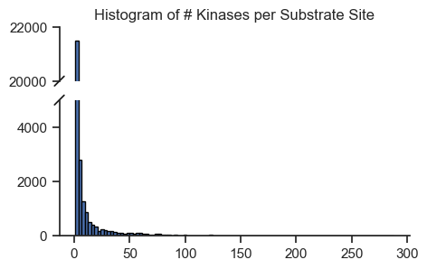
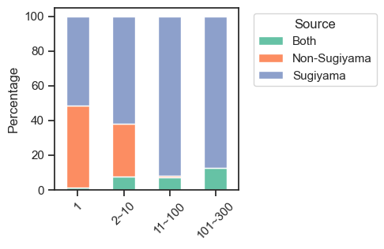
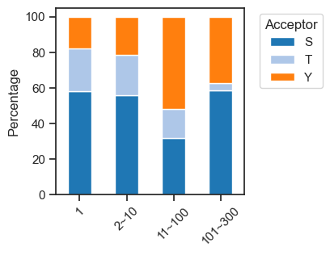

from katlas.core import *
import pandas as pd
import seaborn as sns
from matplotlib import pyplot as plt
from katlas.plot import *
import matplotlib.ticker as mtickerSite promiscuity
df=Data.get_ks_dataset()df.head()| kin_sub_site | kinase_uniprot | substrate_uniprot | site | source | substrate_genes | substrate_phosphoseq | position | site_seq | sub_site | substrate_sequence | kinase_on_tree | kinase_genes | kinase_group | kinase_family | kinase_pspa_big | kinase_pspa_small | kinase_coral_ID | num_kin | |
|---|---|---|---|---|---|---|---|---|---|---|---|---|---|---|---|---|---|---|---|
| 0 | O00141_A4FU28_S140 | O00141 | A4FU28 | S140 | Sugiyama | CTAGE9 | MEEPGATPQPYLGLVLEELGRVVAALPESMRPDENPYGFPSELVVC... | 140 | AAAEEARSLEATCEKLSRsNsELEDEILCLEKDLKEEKSKH | A4FU28_S140 | MEEPGATPQPYLGLVLEELGRVVAALPESMRPDENPYGFPSELVVC... | 1 | SGK1 SGK | AGC | SGK | Basophilic | Akt/rock | SGK1 | 22 |
| 1 | O00141_O00141_S252 | O00141 | O00141 | S252 | Sugiyama | SGK1 SGK | MTVKTEAAKGTLTYSRMRGMVAILIAFMKQRRMGLNDFIQKIANNS... | 252 | SQGHIVLTDFGLCKENIEHNsTtstFCGtPEyLAPEVLHKQ | O00141_S252 | MTVKTEAAKGTLTYSRMRGMVAILIAFMKQRRMGLNDFIQKIANNS... | 1 | SGK1 SGK | AGC | SGK | Basophilic | Akt/rock | SGK1 | 1 |
| 2 | O00141_O00141_S255 | O00141 | O00141 | S255 | Sugiyama | SGK1 SGK | MTVKTEAAKGTLTYSRMRGMVAILIAFMKQRRMGLNDFIQKIANNS... | 255 | HIVLTDFGLCKENIEHNsTtstFCGtPEyLAPEVLHKQPYD | O00141_S255 | MTVKTEAAKGTLTYSRMRGMVAILIAFMKQRRMGLNDFIQKIANNS... | 1 | SGK1 SGK | AGC | SGK | Basophilic | Akt/rock | SGK1 | 1 |
| 3 | O00141_O00141_S397 | O00141 | O00141 | S397 | Sugiyama | SGK1 SGK | MTVKTEAAKGTLTYSRMRGMVAILIAFMKQRRMGLNDFIQKIANNS... | 397 | sGPNDLRHFDPEFTEEPVPNsIGKsPDsVLVTAsVKEAAEA | O00141_S397 | MTVKTEAAKGTLTYSRMRGMVAILIAFMKQRRMGLNDFIQKIANNS... | 1 | SGK1 SGK | AGC | SGK | Basophilic | Akt/rock | SGK1 | 1 |
| 4 | O00141_O00141_S404 | O00141 | O00141 | S404 | Sugiyama | SGK1 SGK | MTVKTEAAKGTLTYSRMRGMVAILIAFMKQRRMGLNDFIQKIANNS... | 404 | HFDPEFTEEPVPNsIGKsPDsVLVTAsVKEAAEAFLGFsYA | O00141_S404 | MTVKTEAAKGTLTYSRMRGMVAILIAFMKQRRMGLNDFIQKIANNS... | 1 | SGK1 SGK | AGC | SGK | Basophilic | Akt/rock | SGK1 | 1 |
Total kinase count per site
pivot = pd.crosstab(df['sub_site'], df['substrate_uniprot'])
hist_data = pivot.sum(1) # total kinase count per sub_site
# Define bins and labels
bins = [0, 1, 10, 100, 300]
labels = ['1', '2~10', '11~100', '101~300']
# Cut into categories
binned = pd.cut(hist_data, bins=bins, labels=labels, right=True, include_lowest=True)
# Count how many kin_sub_sites fall into each bin
binned_counts = binned.value_counts().sort_index()
sites = pd.concat([hist_data,binned],axis=1)
sites.columns=['num_kin','bin']
sites = sites.reset_index()Plot sites kin distribution
# pip install brokenaxesimport matplotlib.pyplot as plt
from brokenaxes import brokenaxes
import pandas as pd
import numpy as npset_sns(100)fig = plt.figure(figsize=(5, 4))
bax = brokenaxes(ylims=((0, 5000), (20_000, 22_000)), hspace=0.2)
# Plot histogram
bax.hist(sites.num_kin, bins=100, edgecolor='black');
# bax.set_xlabel('# Kinases')
# bax.set_ylabel('Frequency') # overlap, does not work very well
plt.title('Histogram of # Kinases per Substrate Site');
save_pdf('fig/promi_hist.pdf')
cnt=sites.bin.value_counts()def plot_pie(value_counts, # value counts
hue_order=None, # list of strings
labeldistance=0.8,
fontsize=12,
fontcolor='black',
palette='tab20' ,
figsize=(4,3)
):
if hue_order is not None: value_counts = value_counts.reindex(hue_order)
colors = sns.color_palette(palette, n_colors=len(value_counts))
value_counts.plot.pie(
autopct='%1.1f%%', # Show percentage inside slices
labeldistance=labeldistance, # Move labels closer to center
textprops={'fontsize': fontsize, 'color': fontcolor} ,
colors=colors,
figsize=figsize,
)
plt.ylabel('')
plt.title(f'n={value_counts.sum():,}')plot_pie(cnt,
fontsize=9,labeldistance=1,palette='Pastel1')
save_pdf('fig/promi_pie.pdf')
def plot_cnt(cnt, xlabel=None,ylabel='Count',figsize=(6, 3)):
fig, ax = plt.subplots(figsize=figsize)
cnt.plot.bar(ax=ax)
# Add text on top of each bar
for idx, value in enumerate(cnt):
ax.text(idx, value + 0.5, f"{value:,}", ha='center', va='bottom', fontsize=10)
ax.spines['top'].set_visible(False)
ax.spines['right'].set_visible(False)
ax.set_ylabel(ylabel)
ax.set_xlabel(xlabel)
plt.xticks(rotation=0)
plt.tight_layout()plot_cnt(cnt,
xlabel='# Kinases per Substrate Site',
ylabel='# Substrate Sites',
figsize=(5,2.4)
)
save_pdf('fig/promi_bar.pdf')
# sites.num_kin.sort_values(ascending=False).to_csv('test.csv')Characterize promicuous motif
seqs = Data.get_ks_unique()seqs| sub_site | num_kin | bin | sub_genes | site_seq | source_combine | acceptor | O00141_SGK1 | O00238_BMPR1B | O00311_CDC7 | ... | Q9Y2K2_SIK3 | Q9Y2U5_MAP3K2 | Q9Y3S1_WNK2 | Q9Y463_DYRK1B | Q9Y4K4_MAP4K5 | Q9Y572_RIPK3 | Q9Y5S2_CDC42BPB | Q9Y6E0_STK24 | Q9Y6M4_CSNK1G3 | Q9Y6R4_MAP3K4 | |
|---|---|---|---|---|---|---|---|---|---|---|---|---|---|---|---|---|---|---|---|---|---|
| 0 | A0A2R8Y4L2_S158 | 1 | 1 | HNRNPA1L3 HNRNPA1P48 | TDRGSGKKRGFAFVTFDDHDsVDKIVIQKYHTVNGHNCEVR | Sugiyama | S | 0 | 0 | 0 | ... | 0 | 0 | 0 | 0 | 0 | 0 | 0 | 0 | 0 | 0 |
| 1 | A0A2R8Y4L2_S22 | 3 | 2~10 | HNRNPA1L3 HNRNPA1P48 | SKSEsPKEPEQLRKLFIGGLsFEtTDESLRSHFEQWGTLTD | Sugiyama | S | 0 | 0 | 0 | ... | 0 | 0 | 0 | 0 | 0 | 0 | 0 | 0 | 0 | 0 |
| 2 | A0A2R8Y4L2_S6 | 3 | 2~10 | HNRNPA1L3 HNRNPA1P48 | _______________MSKSEsPKEPEQLRKLFIGGLsFEtT | Sugiyama | S | 0 | 0 | 0 | ... | 0 | 0 | 0 | 0 | 0 | 0 | 0 | 0 | 0 | 0 |
| 3 | A0A2R8Y4L2_S95 | 65 | 11~100 | HNRNPA1L3 HNRNPA1P48 | RPHKVDGRVVEPKRAVSREDsQRPDAHLTVKKIFVGGIKED | Sugiyama | S | 0 | 1 | 0 | ... | 0 | 1 | 0 | 0 | 1 | 0 | 0 | 0 | 0 | 0 |
| 4 | A0A2R8Y4L2_T25 | 3 | 2~10 | HNRNPA1L3 HNRNPA1P48 | EsPKEPEQLRKLFIGGLsFEtTDESLRSHFEQWGTLTDCVV | Sugiyama | T | 0 | 0 | 0 | ... | 0 | 0 | 0 | 0 | 0 | 0 | 0 | 0 | 0 | 0 |
| ... | ... | ... | ... | ... | ... | ... | ... | ... | ... | ... | ... | ... | ... | ... | ... | ... | ... | ... | ... | ... | ... |
| 29806 | Q9Y6Y8_S894 | 2 | 2~10 | SEC23IP MSTP053 | FISSLKSAWQTLNEFARAHtsstQLQEELEKVANQIKEEEE | Sugiyama | S | 0 | 0 | 0 | ... | 0 | 0 | 0 | 0 | 0 | 0 | 0 | 0 | 0 | 0 |
| 29807 | Q9Y6Y8_T893 | 4 | 2~10 | SEC23IP MSTP053 | GFISSLKSAWQTLNEFARAHtsstQLQEELEKVANQIKEEE | Sugiyama | T | 0 | 0 | 0 | ... | 0 | 0 | 0 | 0 | 0 | 0 | 0 | 0 | 0 | 0 |
| 29808 | Q9Y6Y8_Y935 | 2 | 2~10 | SEC23IP MSTP053 | KQVVEAEKVVEsPDFsKDEDyLGKVGMLNGGRRIDYVLQEK | Sugiyama | Y | 0 | 0 | 0 | ... | 0 | 0 | 0 | 0 | 0 | 0 | 0 | 0 | 0 | 0 |
| 29809 | Q9Y6Y9_Y131 | 1 | 1 | LY96 ESOP1 MD2 | ETVNTTISFSFKGIKFSKGKyKCVVEAISGSPEEMLFCLEF | Non-Sugiyama | Y | 0 | 0 | 0 | ... | 0 | 0 | 0 | 0 | 0 | 0 | 0 | 0 | 0 | 0 |
| 29810 | Q9Y6Y9_Y22 | 1 | 1 | LY96 ESOP1 MD2 | LPFLFFSTLFSSIFTEAQKQyWVCNSSDASISYTYCDKMQY | Non-Sugiyama | Y | 0 | 0 | 0 | ... | 0 | 0 | 0 | 0 | 0 | 0 | 0 | 0 | 0 | 0 |
29811 rows × 462 columns
seq_map=df.drop_duplicates('sub_site').set_index('sub_site').site_seq
gene_map = df.drop_duplicates('sub_site').set_index('sub_site').substrate_genessites['sub_genes'] = sites.sub_site.map(gene_map)
sites['site_seq'] = sites.sub_site.map(seq_map)for b in sites.bin.value_counts().index:
sites_b=sites[sites.bin==b].copy()
pssm_df= get_prob(sites_b,'site_seq')
plot_logo(pssm_df,b,figsize=(13,2))
kin_str='kinase' if b=='1' else 'kinases'
plt.title(f"Sites with {b} {kin_str} (n={len(sites_b)})")
plt.show()
plt.close()


# a = sites[(sites.bin=='101~300')|(sites.bin=='11~100')].copy()
# s_sites = a[a.sub_site.str.split('_').str[1].str[0]=='S']
# y_sites = a[a.sub_site.str.split('_').str[1].str[0]=='Y']
# pssm_df_s = get_prob(s_sites,'site_seq')
# pssm_df_y = get_prob(y_sites,'site_seq')Genes in promicuous site
sites['gene'] = sites.sub_genes.str.split(' ').str[0]sites_b=sites[sites.bin=='101~300'].copy()data = pd.read_csv('raw/genes_grouped.csv')data.Gene.isin(genes).sum()72# remove (small) and (large) for rebosomal protein
data.Group = data.Group.str.split('(').str[0]group_map = data.set_index('Gene')['Group'].to_dict()sites_b['gene_group'] = sites_b.gene.map(group_map)sites_b.gene_group.value_counts()gene_group
Glycolysis 16
Actin cytoskeleton 15
Heat shock protein 12
Ribosomal protein 12
RNA‑binding protein 6
POTE family 3
NME family 2
Signaling/regulatory 2
Tubulin cytoskeleton 2
Cytoskeleton‑associated 1
Regulatory/other 1
Name: count, dtype: int64Stacked by source
def convert_source(x):
if x == "Sugiyama":
return x
elif 'Sugiyama' in x and '|' in x:
return 'Both'
elif 'Sugiyama' not in x:
return 'Non-Sugiyama'# df=Data.get_ks_dataset()df['source2'] = df.source.apply(convert_source)out = df.groupby('sub_site')['source2'].unique()sites['source'] = sites.sub_site.map(out)def combine_source(sources):
sources = set(sources) # remove duplicates
if sources == {'Sugiyama'}:
return 'Sugiyama'
elif sources == {'Non-Sugiyama'}:
return 'Non-Sugiyama'
else:
return 'Both'sites['source_num'] = sites.source.str.len()sites['source_combine'] = sites.source.apply(combine_source)def get_pct(df,bin_col, hue_col):
count_df = df.groupby([bin_col, hue_col], observed=False).size().unstack(fill_value=0)
pct_df = count_df.div(count_df.sum(axis=1), axis=0) * 100
return pct_dfpct_df = get_pct(sites,'bin','source_combine')pct_df| source_combine | Both | Non-Sugiyama | Sugiyama |
|---|---|---|---|
| bin | |||
| 1 | 1.102740 | 47.445205 | 51.452055 |
| 2~10 | 7.470243 | 30.582697 | 61.947060 |
| 11~100 | 7.137336 | 1.056429 | 91.806236 |
| 101~300 | 12.500000 | 0.000000 | 87.500000 |
# pct_df.plot.bar()
# plt.legend(title='Source')def get_plt_color(palette, # dict, list, or set name (tab10)
columns, # columns in the df for plot
):
"Given a dict, list or set name, return the list of names; if dict, need to provide column names of the df."
if isinstance(palette, dict):
# Match colors to column order in pct_df
colors = [palette.get(col, '#cccccc') for col in columns] # fallback color if missing
elif isinstance(palette, str):
colors = sns.color_palette(palette, n_colors=len(columns))
elif isinstance(palette, list):
colors = palette
return colorsget_plt_color('Set2',['a','b'])import matplotlib.pyplot as plt
def plot_composition(df, bin_col, hue_col,palette='tab20',legend_title=None,rotate=45,xlabel=None,ylabel='Percentage',figsize=(5,3)):
pct_df = get_pct(df,bin_col,hue_col)
colors = get_plt_color(palette,pct_df.columns)
pct_df.plot(kind='bar', figsize=figsize,stacked=True,color=colors)
plt.ylabel(ylabel)
plt.xlabel(xlabel)
plt.xticks(rotation=rotate)
if legend_title is None: legend_title = hue_col
plt.legend(title=legend_title, bbox_to_anchor=(1.05, 1), loc='upper left')plot_composition(sites,
'bin',
'source_combine',
palette='Set2',
legend_title='Source',
figsize=(3,3)
)
save_pdf('fig/promi_bar_source_percentage.pdf')
Stacked plot by site type
sites['acceptor'] = sites.sub_site.str.split('_').str[1].str[0]plot_composition(sites,'bin',
'acceptor',
palette=sty_color,
figsize=(3,3),
legend_title='Acceptor'
)
save_pdf('fig/promi_bar_site_percentage.pdf')
pct_df=get_pct(sites,'bin','acceptor')pct_df| acceptor | S | T | Y |
|---|---|---|---|
| bin | |||
| 1 | 57.760274 | 24.431507 | 17.808219 |
| 2~10 | 55.809202 | 22.712738 | 21.478060 |
| 11~100 | 31.512497 | 16.361762 | 52.125741 |
| 101~300 | 58.333333 | 4.166667 | 37.500000 |
fig, axes = plt.subplots(3, 1, figsize=(5, 4.6), sharex=True)
for i, (ax, acc) in enumerate(zip(axes, ['S', 'T', 'Y'])):
pct_df[acc].plot(kind='bar', ax=ax, color=sty_color[acc])
ax.set_title(f'{acc} Sites')
ax.grid(axis='y')
ax.tick_params(axis='x', labelrotation=0)
# Set ylabel only on the middle plot
if i == 1:
ax.set_ylabel('% of Total Substrate Sites Per Bin')
else:
ax.set_ylabel('') # remove label from top/bottom
axes[-1].set_xlabel('Number of Kinases Per Substrate Site')
plt.subplots_adjust(hspace=0.3)
save_pdf('fig/promi_bar_site_percentage_split.pdf')
Save & Add num_kin to the ks_dataset
sites = sites.drop(columns='source')Let’s add kinase binding info as one-hot
df['kinase_uniprot_gene']=df['kinase_uniprot']+'_'+df['kinase_genes'].str.split(' ').str[0]pivot = pd.crosstab(df['sub_site'],df['kinase_uniprot_gene'])pivot = pivot.reset_index()sites = sites.merge(pivot)sites.head()| sub_site | num_kin | bin | sub_genes | site_seq | source_combine | acceptor | O00141_SGK1 | O00238_BMPR1B | O00311_CDC7 | ... | Q9Y2K2_SIK3 | Q9Y2U5_MAP3K2 | Q9Y3S1_WNK2 | Q9Y463_DYRK1B | Q9Y4K4_MAP4K5 | Q9Y572_RIPK3 | Q9Y5S2_CDC42BPB | Q9Y6E0_STK24 | Q9Y6M4_CSNK1G3 | Q9Y6R4_MAP3K4 | |
|---|---|---|---|---|---|---|---|---|---|---|---|---|---|---|---|---|---|---|---|---|---|
| 0 | A0A2R8Y4L2_S158 | 1 | 1 | HNRNPA1L3 HNRNPA1P48 | TDRGSGKKRGFAFVTFDDHDsVDKIVIQKYHTVNGHNCEVR | Sugiyama | S | 0 | 0 | 0 | ... | 0 | 0 | 0 | 0 | 0 | 0 | 0 | 0 | 0 | 0 |
| 1 | A0A2R8Y4L2_S22 | 3 | 2~10 | HNRNPA1L3 HNRNPA1P48 | SKSEsPKEPEQLRKLFIGGLsFEtTDESLRSHFEQWGTLTD | Sugiyama | S | 0 | 0 | 0 | ... | 0 | 0 | 0 | 0 | 0 | 0 | 0 | 0 | 0 | 0 |
| 2 | A0A2R8Y4L2_S6 | 3 | 2~10 | HNRNPA1L3 HNRNPA1P48 | _______________MSKSEsPKEPEQLRKLFIGGLsFEtT | Sugiyama | S | 0 | 0 | 0 | ... | 0 | 0 | 0 | 0 | 0 | 0 | 0 | 0 | 0 | 0 |
| 3 | A0A2R8Y4L2_S95 | 65 | 11~100 | HNRNPA1L3 HNRNPA1P48 | RPHKVDGRVVEPKRAVSREDsQRPDAHLTVKKIFVGGIKED | Sugiyama | S | 0 | 1 | 0 | ... | 0 | 1 | 0 | 0 | 1 | 0 | 0 | 0 | 0 | 0 |
| 4 | A0A2R8Y4L2_T25 | 3 | 2~10 | HNRNPA1L3 HNRNPA1P48 | EsPKEPEQLRKLFIGGLsFEtTDESLRSHFEQWGTLTDCVV | Sugiyama | T | 0 | 0 | 0 | ... | 0 | 0 | 0 | 0 | 0 | 0 | 0 | 0 | 0 | 0 |
5 rows × 462 columns
# sites.to_parquet('out/unique_ks_sites.parquet')Sites data is available upon ‘Data.get_ks_unique’
The num_kin info is added to ks_dataset in Data